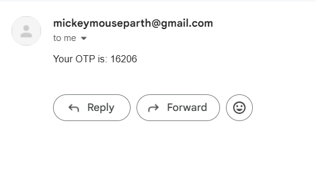
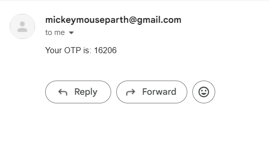
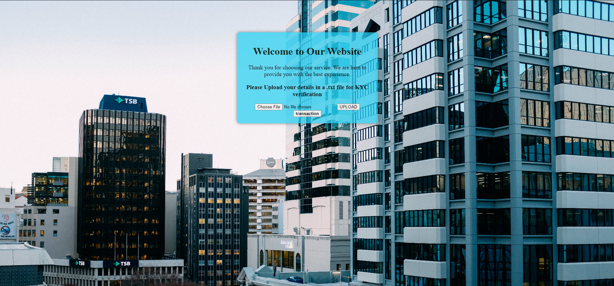
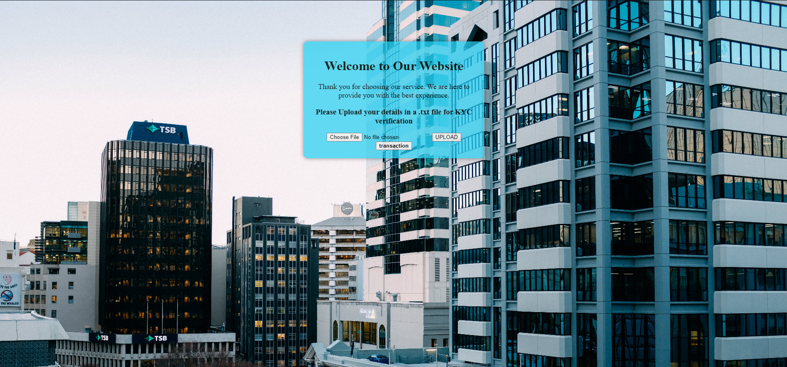

My Projects
User Authentication and OTP Verification System (With SQL injection testing screen)
View on GitHubUser Authentication and OTP Verification System
The User Authentication and OTP Verification System is a web application designed to facilitate secure user registration, login, and verification through One-Time Passwords (OTPs). Built using Flask, this project serves as a foundational example of managing user data, implementing authentication mechanisms, and enhancing security practices in web applications.
Project Overview
With an intuitive user interface, this web application is made to handle user authentication and data collecting. The application, which was created with the help of Flask, a lightweight Python web framework, enables users to register, log in, and get an OTP for verification. An admin view is also included in the application to keep an eye on users and their information.
Objectives
- User Management: To enable users to create accounts and securely manage them.
- Authentication Process: To establish a strong login system with an additional OTP verification step for security.
- Admin Dashboard: To give administrators an interface to view and manage user accounts.
- Demonstration of Security Risks: To draw attention to the significance of secure coding by exposing vulnerabilities through an insecure login route.
Features
- User Registration: Users can sign up by filling out a registration form that collects essential information, including name, date of birth, email, password, and mobile number. The application utilizes SQLite as the database to store user data, ensuring persistence and easy retrieval.
- Secure Login: The login system allows users to enter their credentials. If the credentials match a registered user, the system sends an OTP to the user’s email.
- OTP Verification: Users must enter an OTP received via email to finish the login procedure.
- Admin Dashboard: Administrators may keep an eye on user activity by viewing a list of all registered users.
- Insecure Login Route: SQL injection vulnerabilities can be exploited on this route.
- Responsive Design: The web application employs Bootstrap for responsive design, ensuring a user-friendly experience across various devices.
Technical Stack
- Backend: Flask (Python web framework)
- Database: SQLite, managed via SQLAlchemy for ORM capabilities
- Email Services: SMTP for sending OTPs
- Frontend: HTML, CSS, JavaScript, utilizing Bootstrap for styling
Future Enhancements
- Password Hashing: Use hashing techniques to store passwords in databases safely.
- Enhanced Security Measures: Consider modules such as Flask-Security.
- User Role Management: Extend the application to handle distinct user roles (e.g., admin, user).
 

 
